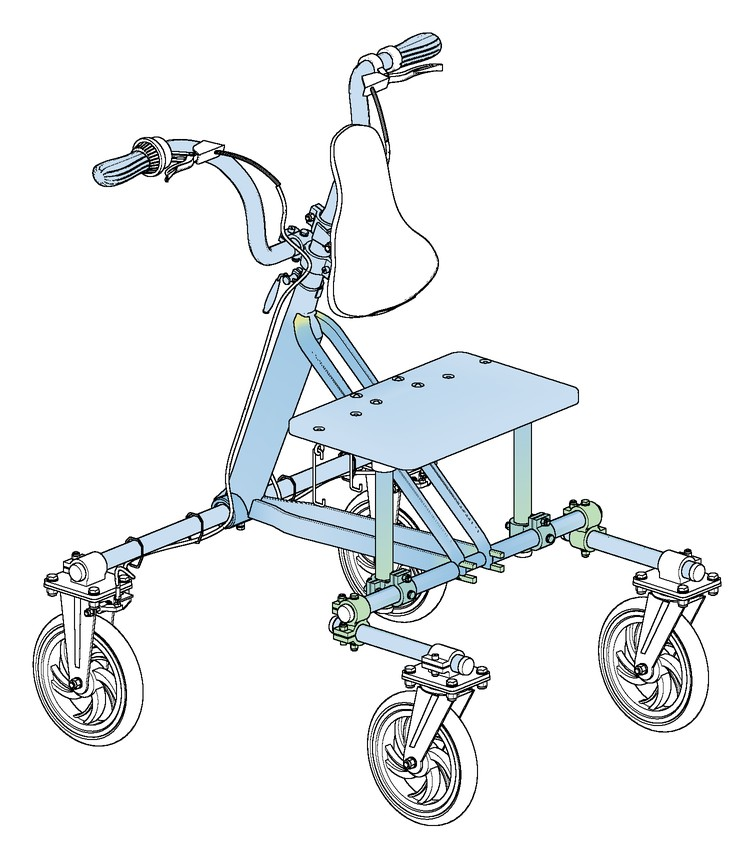
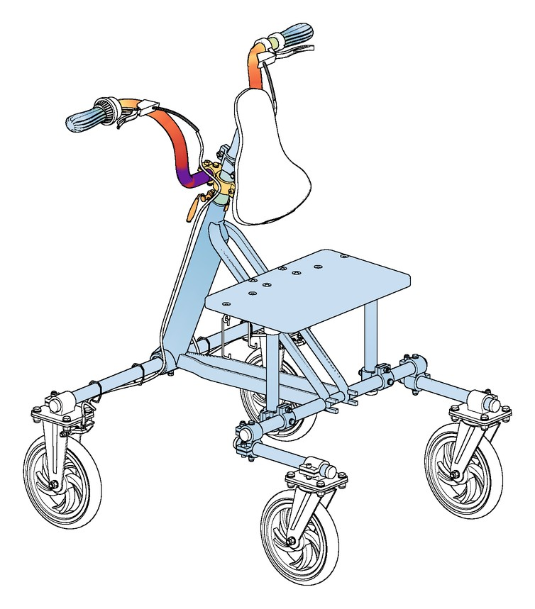
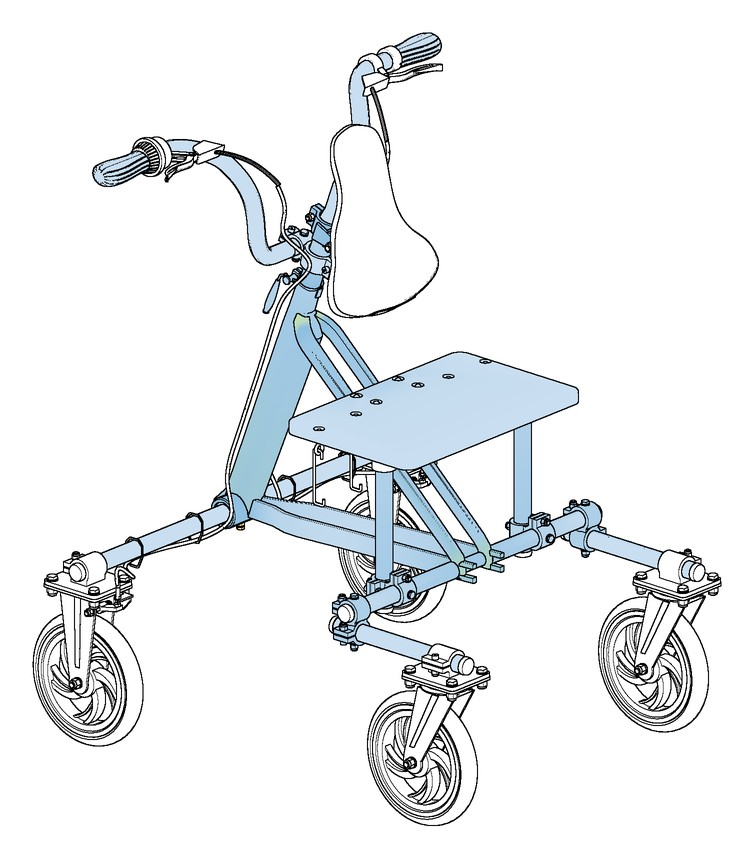
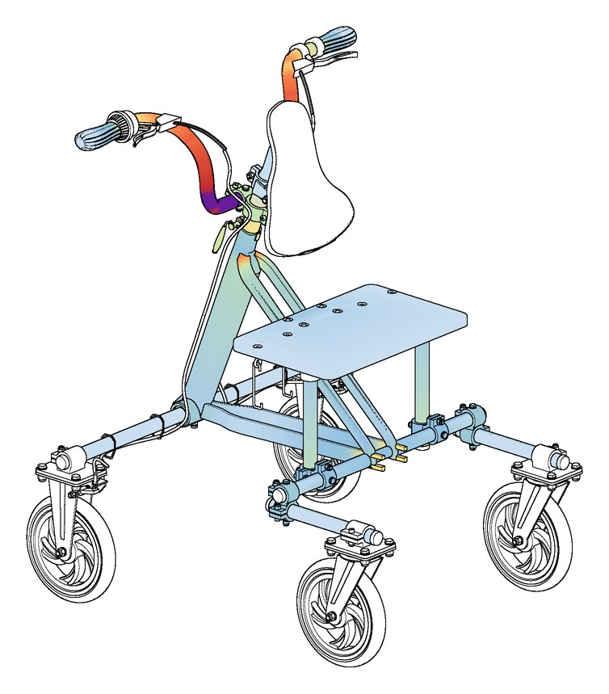

Under a 100 kg user every member and joint stays within its allowable stress, except the reused handlebar, whose wall thickness must be measured.

a
b
c
dThe reused aluminium frame works at 55% of its capacity when sat on.
Peak stress sits at the original seatstay weld. In fatigue the seatstays reach U = 0.86 and the chainstays 0.56.
The handlebar reaches U = 1.22 if its wall is 1.8 mm.
The value falls to 1.07 at 2.2 mm and 0.98 at 2.5 mm. The Hello bar must be measured; if it is thinner, an internal steel sleeve at the clamp restores the margin.
The seat-post quick release is the most loaded joint, at 0.67.
Under the backrest load the rear cross-tube reaches 0.73 and its M6 set screw 0.55. Maximum deflection is 8.0 mm, at the grips.